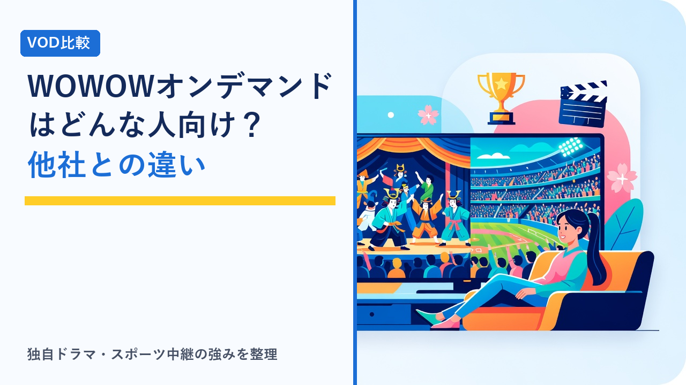
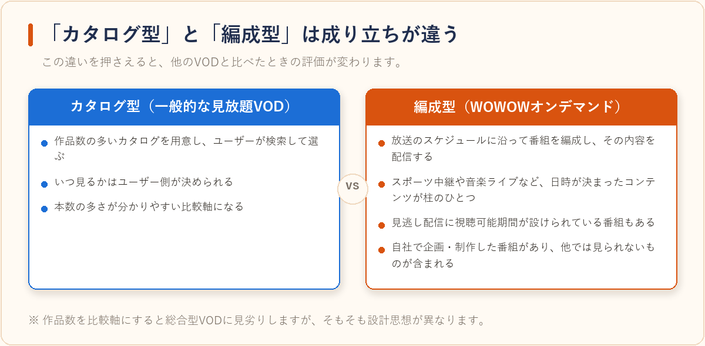

WOWOWオンデマンドはどんな人におすすめ？他のVODとの違いまとめ
2026-08-10 更新

動画配信サービス（VOD）を比較していると、WOWOWオンデマンドだけ少し性格が違うことに気づきます。多くのVODが「作品カタログから好きなものを選んで見る」設計なのに対し、WOWOWはもともと放送局として番組を編成してきたサービスで、その番組を配信でも見られるようにしたのがWOWOWオンデマンドだからです。この記事では、一般的な見放題型VODとの構造的な違いと、どんな人に向いているのかを客観的に整理します。
WOWOWオンデマンドは「カタログ型」ではなく「編成型」
NetflixやU-NEXTのような見放題型VODは、作品数の多いカタログを用意し、ユーザーが検索して選ぶ形が基本です。一方WOWOWは、放送のスケジュールに沿って番組を編成し、その内容をオンデマンドでも提供するという成り立ちを持っています。そのため次のような違いが生まれます。

- ライブ・生中継の比重が大きい：スポーツ中継や音楽ライブなど、放送日時が決まっているコンテンツが柱のひとつになっています。カタログ型VODではあまり見られない領域です。
- オリジナル制作のドラマ・ドキュメンタリーがある：自社で企画・制作した番組を持っており、他サービスでは視聴できない番組が含まれます。
- 配信期間が設定されている番組がある：放送済み番組の見逃し配信には視聴可能期間が設けられていることがあり、「いつでも見られる」とは限りません。
- 作品数そのものは多さを競う設計ではない：本数を比較軸にすると総合型VODに見劣りしますが、そもそも狙っている方向が異なります。
一般的な見放題型VODとの比較
下表は、サービスの設計思想の違いを整理したものです。料金・ラインナップ・配信期間は変更されるため、契約前には必ず公式サイトで最新情報を確認してください。
| 比較軸 | WOWOWオンデマンド | 一般的な見放題型VOD |
|---|---|---|
| コンテンツの中心 | 映画・スポーツ中継・音楽ライブ・オリジナル番組 | 映画・ドラマ・アニメなどのカタログ作品 |
| 視聴スタイル | 放送/配信スケジュールに合わせて見る番組が多い | 好きなタイミングで検索して見る |
| ライブ中継 | 大きな柱のひとつ | 基本的に扱いが少ない（別サービスの場合が多い） |
| 月額水準 | 見放題型の平均よりやや高めの水準に設定されている | 数百円〜1,500円前後まで幅がある |
| 向いている使い方 | 目当ての中継・番組がある時期に契約する | 常時契約して日常的に消化する |
つまり、WOWOWオンデマンドは「毎日なんとなく動画を流しておきたい」というニーズよりも、「このスポーツの大会が見たい」「このアーティストのライブ配信を見たい」という目的がはっきりしている人に向いた構造をしています。
向いている人・向いていない人
向いているのは、テニスやサッカー、格闘技などの国際大会を中継で追いかけたい人、音楽ライブの配信を高い頻度で視聴する人、そして映画やオリジナルドラマをじっくり1本ずつ見るタイプの人です。「本数は少なくても、見たいものが確実にあるか」を重視する人と相性が良いといえます。
逆に向いていないのは、放送中のアニメを毎週追いたい人や、家族それぞれが違うジャンルを大量に消化したい人です。この用途であれば、同時配信に強いサービスや総合型VODのほうが目的に合います。アニメ目的での選び方はアニメ好きにおすすめのVODサービスはどれ？作品ラインナップの傾向比較で整理しています。
選び方のポイント
- 見たい番組の「配信予定」を先に確認する：編成型のサービスは、契約した時期によって見られるものが変わります。目当ての中継や番組が配信対象か、番組表・配信予定ページで事前に確認するのが確実です。
- 放送と配信の対象範囲の違いを確認する：放送では見られても、権利の都合で配信対象外になる番組があります。「オンデマンドで見られるか」を単位で確認しておきましょう。
- 見逃し配信の視聴期限を確認する：配信期間が限定されている番組は、契約していても期限を過ぎると視聴できません。まとめ見の予定があるなら期限は要チェックです。
- 契約期間を「イベント単位」で考える：年間を通して見るものがあるかどうかで判断が変わります。特定の大会やシリーズが目的なら、その期間だけ契約する使い方も選択肢です。
- 同時視聴・デバイス対応を確認する：家族で使う場合や、テレビの大画面で中継を見たい場合は、対応デバイスと同時視聴の上限を先に確認しておくと安心です。
- 解約手続きの方法を登録時に確認する：加入経路（公式サイト経由か、他サービス経由か）によって解約先が異なる場合があります。詳しくはVODサービスの解約忘れを防ぐコツと注意点まとめを参考にしてください。
よくある質問
アンテナがなくても視聴できますか？
WOWOWオンデマンドはインターネット経由で視聴する配信サービスのため、BSアンテナがない環境でも利用できる形が用意されています。ただし加入プランや申し込み方法によって条件が異なる場合があるため、公式サイトで対応状況を確認してください。
放送で見られる番組はすべて配信でも見られますか？
すべてが一致するわけではありません。権利契約の都合で、放送のみ・配信のみという番組が発生することがあります。目的の番組がある場合は、番組ページで配信対象かどうかを確認するのが確実です。
他のVODと併用する意味はありますか？
カバーしているジャンルが重なりにくいため、併用しているケースはあります。日常的に見るカタログ型を1本、スポーツや音楽ライブなど目的が明確な時期だけWOWOWを追加する、という組み合わせ方が考えられます。無料体験を用意しているサービスも多いので、比較検討する際は動画配信サービスの無料体験まとめ比較もあわせてご覧ください。